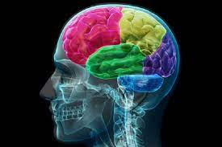

La salud mental y la existencia de alteraciones y trastornos es un tema sobre el que no suele hablarse en la sociedad. Por qué se habla tan poco de ello, qué debe sentir alguien con un trastorno, el estigma social que suponía en el pasado un diagnóstico y el modo en el que aún hoy en día sigue existiendo ese prejuicio, cómo puede afectarles y cómo son visualizados por la sociedad son algunos de los temas de debate que se proponen. Este es un tema de debate que incluye un claro componente ético.
 Mas información